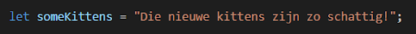

Intro to Java Script - Opdracht 2
String Methods
Opdracht 2.1
Gegeven de volgende String:

- Splits de String met een array method op in 2 aparte zinnen. Stop beiden in een aparte variabele.
<script>
let someKittens = "De poes van de buurman heeft kittens gehad! Hij vraagt of wij nog kittens willen.";
let line = someKittens.split("! ");
let line1 = line[0] + "!";
console.log(line1);
let line2 = line[1];
console.log(line2);
</script>
- Zo’n geweldig nieuws verdient upper case. Zet someKittens om naar hoofdletters.
<script>
let someKittens = "De poes van de buurman heeft kittens gehad! Hij vraagt of wij nog kittens willen.";
const someKittens2 = someKittens.toUpperCase();
let line = someKittens2.split("! ");
let line1 = line[0] + "!";
let line2 = line[1];
console.log(line1);
console.log(line2);
</script>
- Geef de eerste en laatste index van KITTENS.
<script>
let someKittens = "De poes van de buurman heeft kittens gehad! Hij vraagt of wij nog kittens willen.";
const someKittens2 = someKittens.toUpperCase();
let line = someKittens2.split("! ");
let line1 = line[0] + "!";
let line2 = line[1];
console.log(line1);
console.log(line2);
console.log(someKittens.indexOf('kittens'));
console.log(someKittens.lastIndexOf('kittens'));
</script>
- Gebruik charAt() op beiden. Welk teken krijg je terug?
<script>
let someKittens = "De poes van de buurman heeft kittens gehad! Hij vraagt of wij nog kittens willen.";
const someKittens2 = someKittens.toUpperCase();
let line = someKittens2.split("! ");
let line1 = line[0] + "!";
let line2 = line[1];
console.log(line1);
console.log(line2);
console.log(someKittens.indexOf('kittens'));
console.log(someKittens.lastIndexOf('kittens'));
const index1 = someKittens.indexOf('kittens');
const index2 = someKittens.lastIndexOf('kittens');
console.log(`The character at index ${index1} is ${someKittens.charAt(index1)}`);
console.log(`The character at index ${index2} is ${someKittens.charAt(index2)}`);
</script>
console geeft nu:
DE POES VAN DE BUURMAN HEEFT KITTENS GEHAD!
HIJ VRAAGT OF WIJ NOG KITTENS WILLEN.
29
66
The character at index 29 is k
The character at index 66 is k
Opdracht 2.2
substring() en slice() lijken erg op elkaar. We onderzoeken de verschillen. Test dit met een eigen string, of
gebruik het vorige voorbeeld.
Beide functies hebben dezelfde syntax. Ze selecteren een een gedeelte van de string en produceren het
geselecteerde gedeelte als nieuwe string.
Start en eind parameters worden gebruikt om de selectie te specificeren (let op: eerste karakter begint met een
nul). Start is hierbuij verplicht.
Een eind is niet nodig! Bij het niet aangeven van een eind wordt de resterende string gebruikt.
Als start==stop dan geven beide functies een lege string terug als antwoord. Als een argument groter is dan een
string lengte dan zal de string lengte worden gebruikt.
substring() en slice() kunnen 2 waardes meegegeven worden - een index waar de nieuwe waarde begint en een index
waar deze moet eindigen.
Wat doet substring() als het eerste getal hoger is dan het tweede getal?
Als start > stop, dan wisselt substring de waardes.
Wat doet slice() als het eerste getal hoger is dan het tweede getal?
Als start > stop, dan geeft slice een lege string (“”).
Deze waardes hoeven niet per se positief te zijn - je kan ook negatieve getallen meegeven.
Wat doet substring() bij negatieve waardes?
Als een argument negatief is of NaN, dan wordt het behandeld als 0.
Wat doet slice() bij negatieve waardes
Als start negatief is dan wordt het de char van het eind van de zin gebruikt.
Als stop negatief is dan wordt stop als volgt vertaald:
stop = string.length – Math.abs(stop)
Dit houdt in dat als de string lengte 100 is en de stop -20, de stop wordt vertaald naar 80.>
Opdracht 2.3:
Gegeven het volgende voorbeeld:

Gebruik split() om alle woorden apart in een Array te zetten.
<script>
let someKittens = "Die nieuwe kittens zijn zo schattig!"
let split = someKittens.split(" ")
console.log(split)
</script>